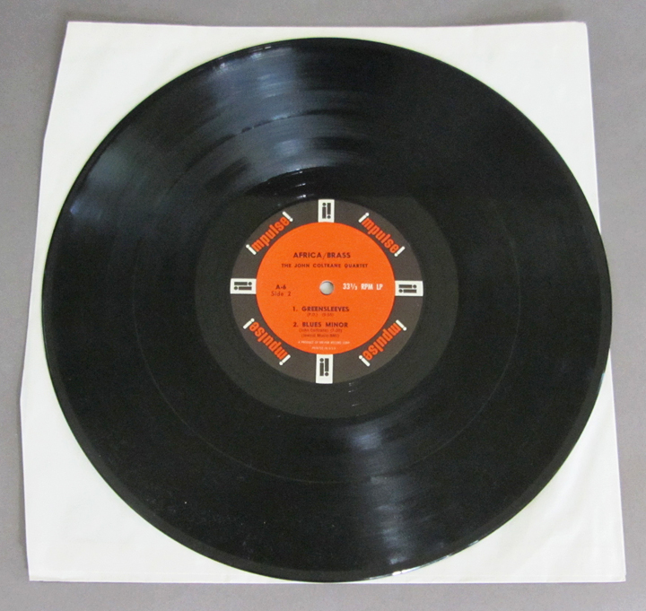

Gevonden LP in africa
In africa zijn 312 lp's gevonden. in zuid-madagascar vonden 12 argeologen
de lp's. Het gaat om zoon 12 miljoen euro aan lp's. Er is nog nooit
zo'n grote fonds gedaan als het gaat om lp's. Er is 1 hele zeldzame lp's
deze is uit het oosten van zuid-madagascar.
Arnold van schepen is terug
Om zo veel mogelijk muziek op de plaat te krijgen past men variabele spoed
(verplaatsing van de naald per omwenteling) toe. De studiorecorder waarop
de master wordt afgespeeld, is voorzien van een extra leeskop (weergavekop)
die het signaal op luidheid bemonstert en de spoed van de platensnijder aanstuurt.
Zodoende liggen bij zachte passages de groeven heel dicht tegen elkaar aan
om bij luidere passages ruimer te worden.